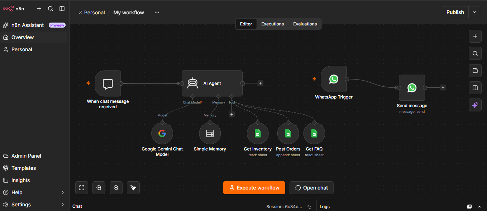

Customer support · Orders
AI-Powered Customer Support & Order Management
The problem
On a busy day, restaurant staff answer the same questions again and again: what is on the menu, what is in stock, how to order. Slow replies and mistyped orders cost sales.
What it does
A chat agent greets the customer, shows the menu with live stock from a Google Sheet, answers FAQs, asks for the customer's name and records the order in an orders sheet. It remembers the conversation, so customers can order in plain language.

In progress: connecting the same agent to WhatsApp.